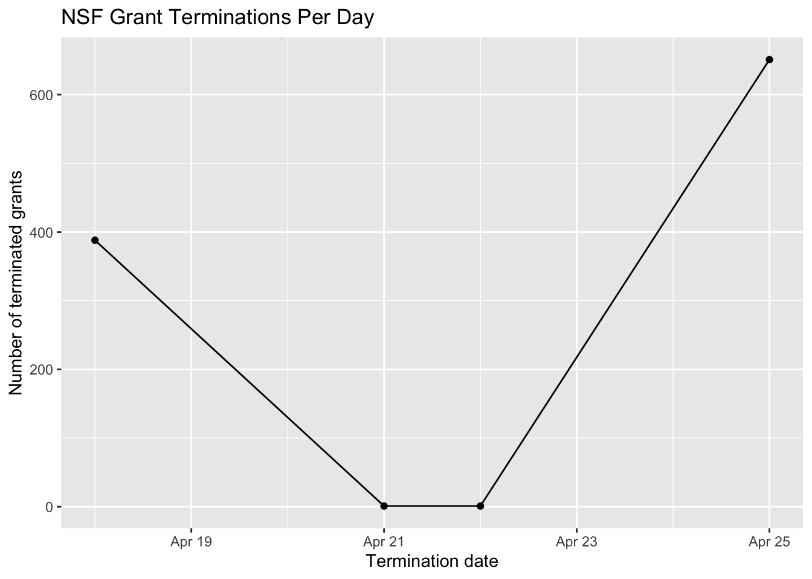
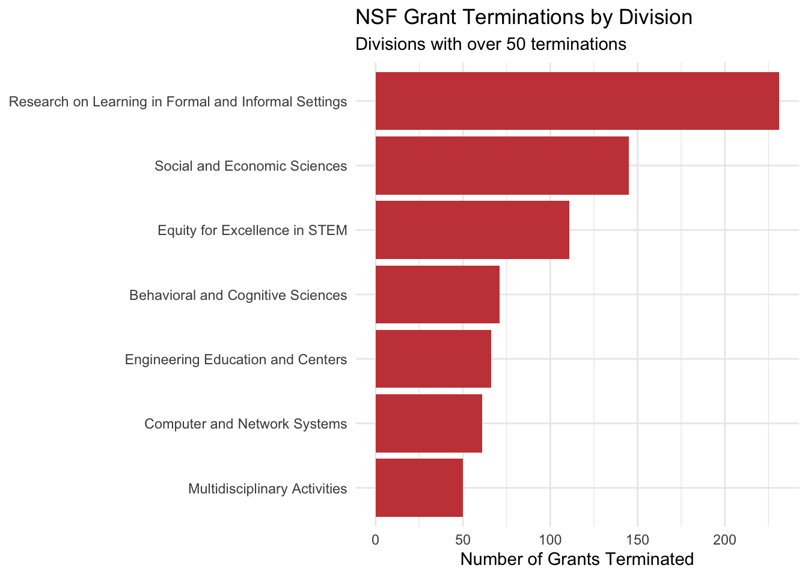
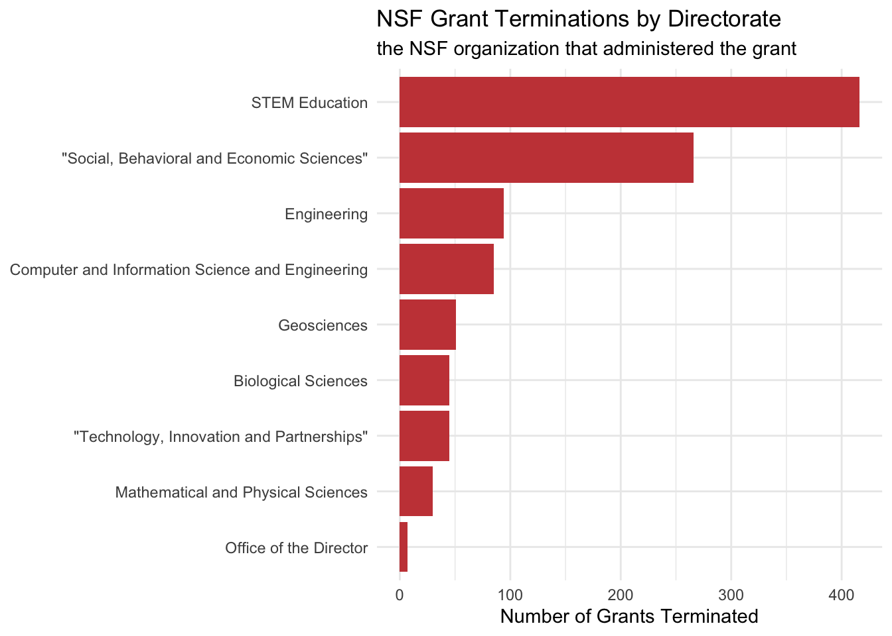
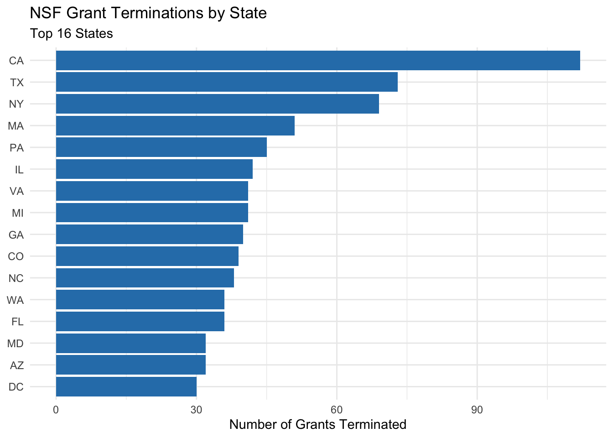
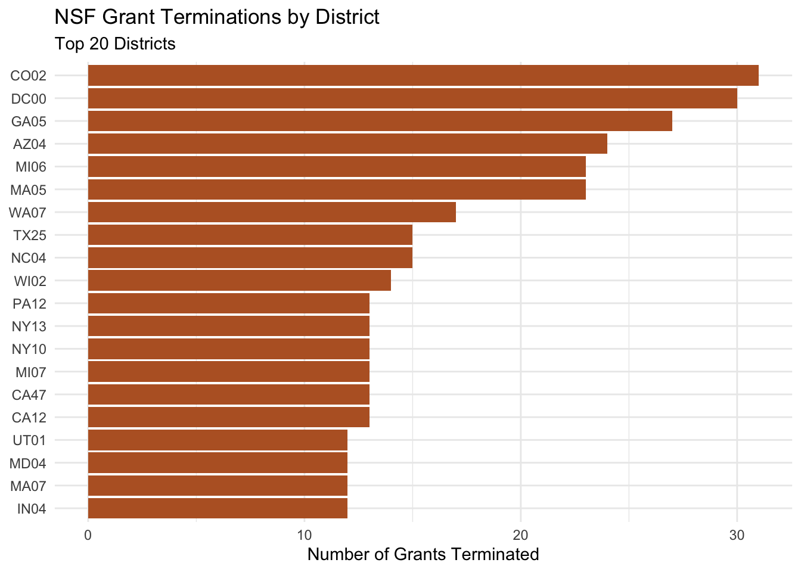
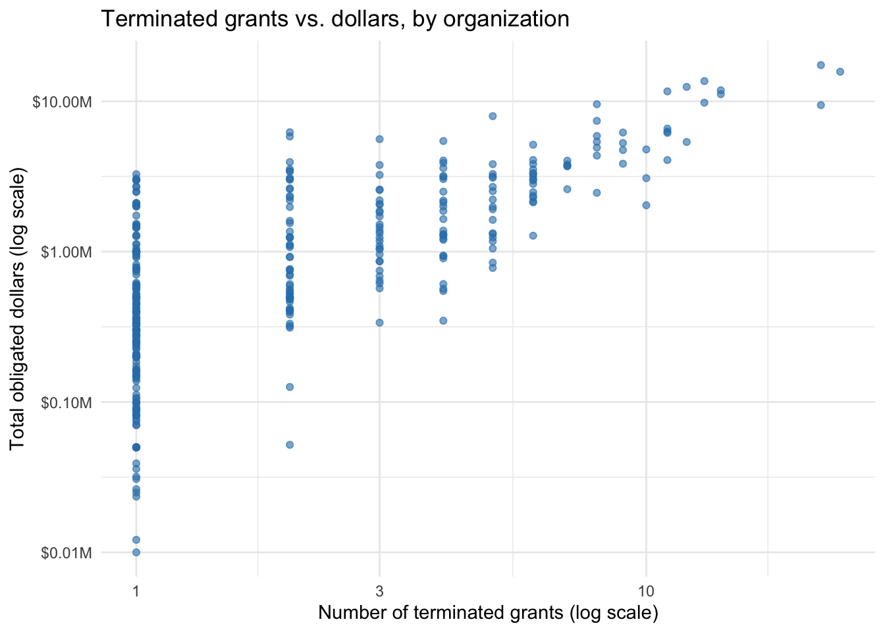
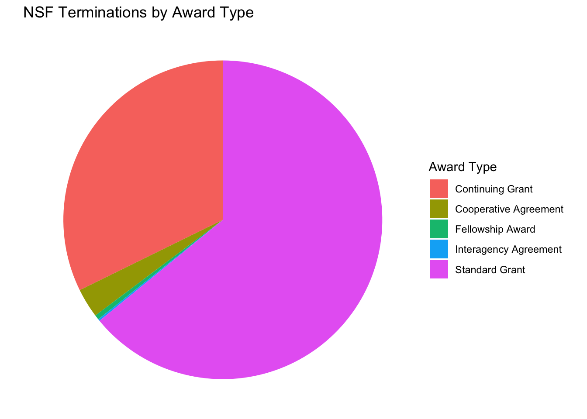
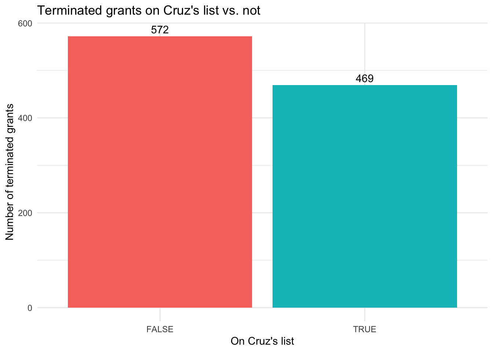
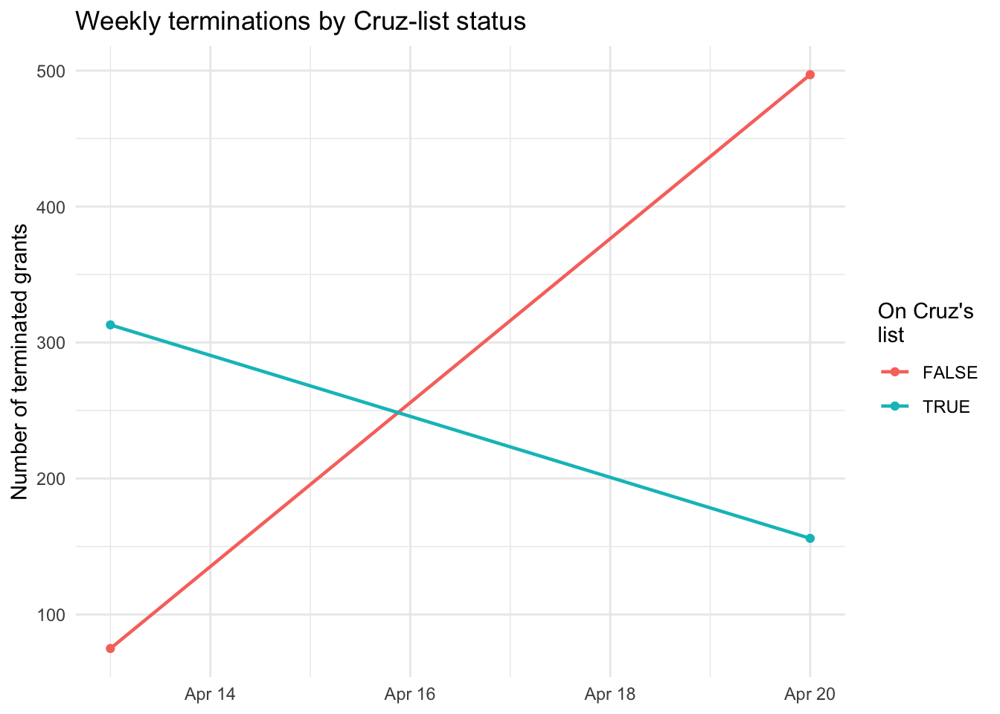
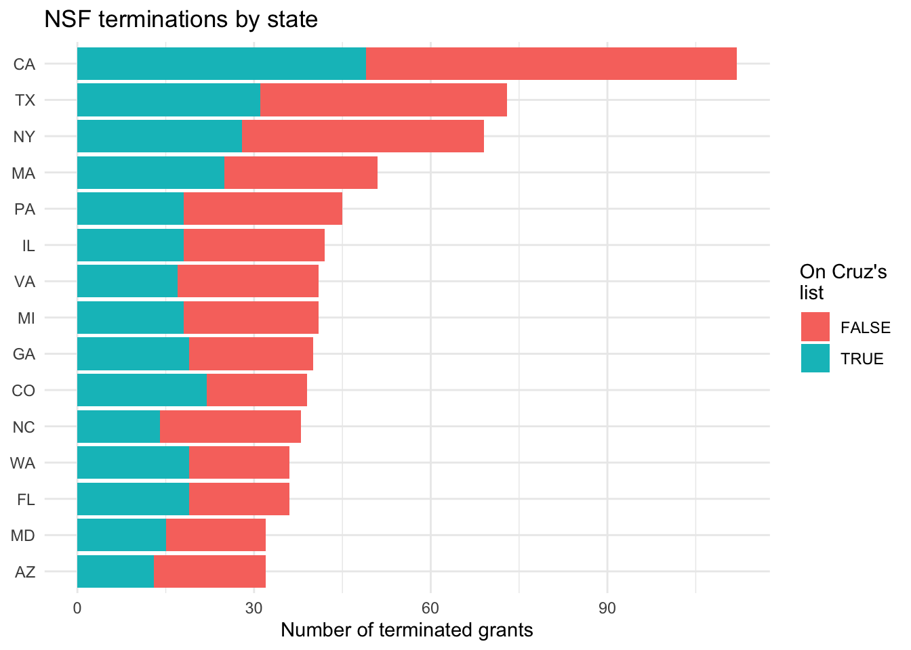

Analysis of NSF grants terminated by the Trump Administration from TidyTuesday
Author
Ava Li
Published
September 27, 2026
The Data
Retrieved from TidyTuesday:
https://github.com/rfordatascience/tidytuesday/blob/main/data/2025/2025-05-06/readme.md
The dataset includes information on grants for scientific research and education projects from the U.S. National Science Foundation (NSF) that have been terminated by the Trump administration in 2025. The data was collected by Grant Watch through crowdsourcing from researchers and program administrators, as the administration has not released information on these terminations.
Code
nsf |>group_by(termination_letter_date) |>summarize(num_perday =n()) |>ggplot(aes(x=termination_letter_date,y=num_perday)) +geom_line() +geom_point() +labs(title ="NSF Grant Terminations Per Day",x ="Termination date",y ="Number of terminated grants")

Code
nsf |>filter(!is.na(division)) |>group_by(division) |>summarize(num =n()) |>filter(num >49) |>ggplot(aes(x=num,y =fct_reorder(division, num)))+geom_col(fill ="#c84545") +labs(title ="NSF Grant Terminations by Division",subtitle ="Divisions with over 50 terminations",x ="Number of Grants Terminated",y =NULL ) +theme_minimal()

Code
nsf |>filter(!is.na(directorate)) |>group_by(directorate) |>summarize(num =n()) |>ggplot(aes(x=num,y =fct_reorder(directorate, num)))+geom_col(fill ="#c84545") +labs(title ="NSF Grant Terminations by Directorate",subtitle ="the NSF organization that administered the grant ",x ="Number of Grants Terminated",y =NULL ) +theme_minimal()

Code
nsf |>group_by(org_state) |>summarize(num =n()) |>arrange(desc(num)) |>slice_head(n =16) |>ggplot(aes(x=num,y =fct_reorder(org_state, num)))+geom_col(fill ="#2c7fb8") +labs(title ="NSF Grant Terminations by State",subtitle ="Top 16 States",x ="Number of Grants Terminated",y =NULL ) +theme_minimal()

Code
nsf |>group_by(org_district) |>summarize(num =n()) |>arrange(desc(num)) |>slice_head(n =20) |>ggplot(aes(x=num,y =fct_reorder(org_district, num)))+geom_col(fill ="#b8622c") +labs(title ="NSF Grant Terminations by District",subtitle ="Top 20 Districts",x ="Number of Grants Terminated",y =NULL ) +theme_minimal()

Code
nsf |>group_by(org_name) |>summarize(num =n()) |>filter(num>9) |>ggplot(aes(x=num,y =fct_reorder(org_name, num)))+geom_col(fill ="#2c7fb8") +labs(title ="NSF Grant Terminations by Organization",subtitle ="10 or more terminations",x ="Number of Grants Terminated",y =NULL ) +theme_minimal()
Code
top_orgs <- nsf |>filter(!is.na(org_name), !is.na(usaspending_obligated)) |>group_by(org_name) |>summarize(total_dollars =sum(usaspending_obligated)) |>arrange(desc(total_dollars)) |>slice_head(n =15)ggplot(top_orgs, aes(x = total_dollars, y =fct_reorder(org_name, total_dollars))) +geom_col(fill ="#d95f0e") +scale_x_continuous(labels = scales::label_dollar(scale =1e-6, suffix ="M")) +labs(title ="Organizations with the most NSF funding terminated",x ="Total obligated dollars",y =NULL ) +theme_minimal()
Code
org_summary <- nsf |>filter(!is.na(org_name), !is.na(usaspending_obligated)) |>group_by(org_name) |>summarize(n_terminations =n(),total_dollars =sum(usaspending_obligated) )ggplot(org_summary, aes(x = n_terminations, y = total_dollars)) +geom_point(alpha =0.6, color ="#2c7fb8") +scale_x_log10() +scale_y_log10(labels = scales::label_dollar(scale =1e-6, suffix ="M")) +labs(title ="Terminated grants vs. dollars, by organization",x ="Number of terminated grants (log scale)",y ="Total obligated dollars (log scale)" ) +theme_minimal()

Code
nsf |>group_by(award_type) |>summarize(num_term =n()) |>mutate(perc = num_term/sum(num_term)) |>ggplot(aes(x="",y = num_term, fill = award_type)) +geom_col() +coord_polar(theta ="y") +labs(title ="NSF Terminations by Award Type",fill ="Award Type" ) +theme_void()

Code
cruz_counts <- nsf |>group_by(in_cruz_list) |>summarize(n_terminations =n())ggplot(cruz_counts, aes(x = in_cruz_list, y = n_terminations, fill = in_cruz_list)) +geom_col(show.legend =FALSE) +geom_text(aes(label = n_terminations), vjust =-0.4) +labs(title ="Terminated grants on Cruz's list vs. not",x ="On Cruz's list",y ="Number of terminated grants" ) +theme_minimal()

Code
weekly_cruz <- nsf |>filter(!is.na(termination_letter_date)) |>mutate(week =floor_date(termination_letter_date, unit ="week")) |>group_by(week, in_cruz_list) |>summarize(n_terminations =n(), .groups ="drop")ggplot(weekly_cruz, aes(x = week, y = n_terminations, color = in_cruz_list)) +geom_line(linewidth =0.8) +geom_point() +labs(title ="Weekly terminations by Cruz-list status",x =NULL,y ="Number of terminated grants",color ="On Cruz's\nlist" ) +theme_minimal()

Code
top_states <- nsf |>filter(!is.na(org_state)) |>group_by(org_state) |>summarize(total =n()) |>arrange(desc(total)) |>slice_head(n =15)# Step 2: count by state and list status, keeping only those 15 statesstate_cruz <- nsf |>filter(!is.na(org_state)) |>group_by(org_state, in_cruz_list) |>summarize(n_terminations =n(), .groups ="drop") |>inner_join(top_states, by ="org_state")ggplot(state_cruz, aes(x = n_terminations,y =fct_reorder(org_state, total),fill = in_cruz_list)) +geom_col() +labs(title ="NSF terminations by state",x ="Number of terminated grants",y =NULL,fill ="On Cruz's\nlist" ) +theme_minimal()

Code
top_states <- nsf |>filter(!is.na(org_name)) |>group_by(org_name) |>summarize(total =n()) |>arrange(desc(total)) |>slice_head(n =15)# Step 2: count by state and list status, keeping only those 15 statesstate_cruz <- nsf |>filter(!is.na(org_name)) |>group_by(org_name, in_cruz_list) |>summarize(n_terminations =n(), .groups ="drop") |>inner_join(top_states, by ="org_name")ggplot(state_cruz, aes(x = n_terminations,y =fct_reorder(org_name, total),fill = in_cruz_list)) +geom_col() +labs(title ="NSF terminations by state",x ="Number of terminated grants",y =NULL,fill ="On Cruz's\nlist" ) +theme_minimal()